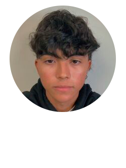
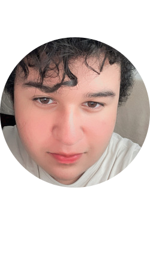

¿Quienes somos?
-
Kesly Rodríguez Salcedo
Ingeniería de Sistemas, Primer semestre 2023-1, 17 años
Daniel Oliveros Cubides
Ingeniería de Sistemas, Primer semestre 2023-1, 16 años
Alexy Salcedo Tete
Ingeniería de Sistemas, Primer semestre 2023-1, 17 años
